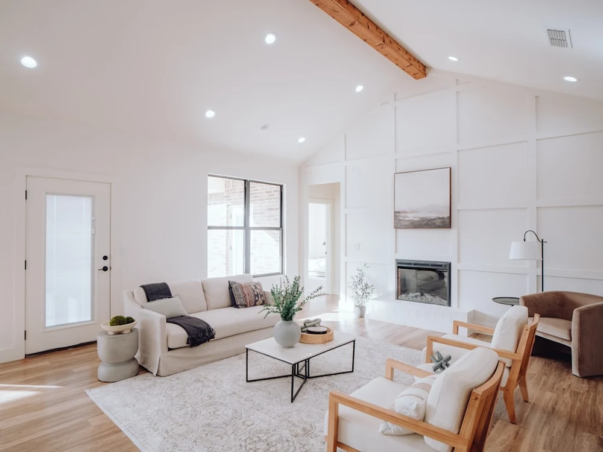

Can You Sell a House As‑Is? Your Questions, Answered
Straight answers on who buys, what it costs, how long it takes and what comes next.
Get My Cash OfferBefore you call
What Sellers Ask First, by Topic
Most questions come down to three things: who buys the house, what you would net, and when you are bound. Nothing binds you until you sign.
The offer
Who Buys and What an Offer Means
Who makes a cash offer, what it binds you to, and how to tell a fair one from a lowball.
Who actually buys my house?
On a cash offer, an independent investor buys it, not Mark and not Real Broker. Mark is a licensed broker who brings the house to several investors, reads their offers and works for you. On a listing, a buyer from the open market buys it.
Is selling for cash a smart move?
It can be, when speed, condition or certainty matter more than top price. A cash offer usually comes in below full market value; in exchange you usually skip repairs, showings and a buyer's loan falling through. Mark sets the cash number beside what a listing would likely net, so you can see the trade before you decide.
Is the offer binding once I get it?
No. An offer is not binding until you sign a written purchase agreement. You can look at it, compare it and say no at no cost.
How do I know a cash offer is fair?
Compare it with two things: what the house would likely sell for on the open market, and what you would actually take home after costs. Mark puts both beside every offer, and asks each investor the same questions in writing so the offers can be compared line by line.
Why get several offers instead of one?
Investors price the same house differently, depending on what they plan to do with it. One offer tells you one buyer's number. Several offers, side by side, tell you what the house is worth to cash buyers.
How do I spot a "we buy houses" scam or a lowball buyer?
Ask for the offer, the earnest money and the closing date in writing. Ask whether the buyer will close themselves or assign the contract to someone else. Be careful with a price that drops after the inspection, pressure to sign the same day, or fees taken out of your proceeds. Use a licensed title or escrow company you can look up yourself.
Costs
What Selling Costs You
Closing costs, repairs and the buyer's agent, and who usually pays for each.
What does it cost me to sell for cash?
It depends on the buyer and the contract. Some investors pay some or all of the usual closing costs; others do not. Mark shows you each offer's costs in writing and what you would net, before you sign anything.
Do I have to pay for repairs or cleaning?
Usually not on a cash offer: investors typically buy the house as it sits and leave the cleanout to you or do it themselves. The contract says which. On a listing, repairs are usually negotiated after the buyer's inspection.
Do sellers still pay the buyer's agent's commission?
Not automatically. Since the National Association of REALTORS® settlement took effect on August 17, 2024, buyer agents work under a written agreement with their buyer, and any payment from the seller is negotiated. On a direct cash sale to an investor there is often no buyer's agent at all.
Timing
How Long a Cash Sale Takes
How fast investors close, who picks the date, and who handles the closing.
How fast can I sell for cash?
It depends on the investor and on title. Cash buyers do not wait on a lender, so many can close in weeks rather than months. Mark asks each investor for their closing date in writing.
Can I choose my closing date?
Usually, yes, within the buyer's terms. Some sellers need to close fast; others need time to move. Mark asks for the date that works for you and puts it in the offer.
Who handles the closing in Arizona?
A licensed title and escrow company. It holds the money and the documents, makes sure the title is clear, and records the deed.
The house
Repairs, Tenants and What Stays
Selling as-is, what you still have to disclose, and houses with tenants, leased solar or belongings left behind.
Can I sell my house as-is, without an inspection?
You can sell as-is, and many investors buy that way. Most still walk through the house or inspect it before closing, and the contract says what happens if they find something. As-is does not remove your duty to tell the buyer about problems you know of.
Do I still have to disclose problems if I sell as-is?
Yes. Arizona sellers must disclose known material defects. The usual form is the Arizona REALTORS® Seller's Property Disclosure Statement (SPDS).
Can I sell with tenants still living there?
Often, yes. Many investors buy rentals with the tenants in place and take over the lease. The lease and the tenants' deposits usually move to the buyer at closing, as the purchase contract sets out.
What if there are leased solar panels on the roof?
The solar lease or loan has to be transferred to the buyer or paid off at closing, and some buyers will not take one on. Mark asks each investor up front, so the panels do not surprise anyone late in the sale.
Do I have to empty the house?
Not always. Many investors let you leave behind what you do not want. The contract says what stays.
Hard situations
Foreclosure, Probate, Divorce and Liens
Selling when a lender, a court or a second owner has a say in the sale.
Can I sell if I am behind on payments or facing foreclosure?
Often, yes, if the sale can close before the trustee's sale. In Arizona the trustee's sale can be no sooner than the 91st day after the notice of sale is recorded. Time matters, so call early; Mark can tell you what each way of selling would need. Selling is not a promise to stop a foreclosure.
Can I sell an inherited house before probate is finished?
Often, yes. Once the court appoints a personal representative, that person can usually sell the house while probate is still open. Title companies ask for the court's letters of appointment before closing.
How does selling work in a divorce?
Both owners on title usually have to sign, and the sale has to fit the divorce agreement or court order. A cash offer can give you both one clear number and a set date.
Can I sell a house with a lien or back taxes?
Usually, yes. When the price covers them, liens and back taxes are paid from the sale proceeds at closing, through escrow, so the buyer gets clear title.
Cash to Win
Buy Your Next Home First
Making a strong offer on the next home before this one sells.
What is Cash to Win?
A way to buy your next home before you sell this one. Through Wallick & Volk, you make a strong offer on the next home without a home-sale contingency, then sell the old one on the open market once you have moved.
Who qualifies for Cash to Win?
It needs full mortgage pre-approval through Wallick & Volk. Mark will tell you on the first call whether it is worth asking Wallick & Volk.
Working with Mark
Why Call a Broker First
Why a broker, where Mark works, and what happens after you reach out.
Why work with a broker instead of selling straight to a cash buyer?
A cash buyer wants the lowest price they can get. Mark works for you, gets more than one offer, reads every term, and tells you plainly when listing would put more in your pocket.
Where does Mark work?
Phoenix, Scottsdale, Cave Creek and the North Valley. If your house is somewhere else in the Valley, call and ask.
What happens after I enter my address?
Mark looks at the house and your situation, then calls you to go over your options. Nothing is binding, and there is no cost to see your numbers.
Next
Tell Mark About the House
A few questions, about two minutes. Nothing is binding until you sign.
See What the House Would Net
Tell Mark about the house. He will come back with the cash offers investors make and a listing estimate, side by side. No obligation.
Get My Cash OfferRather talk first? 602.469.1111